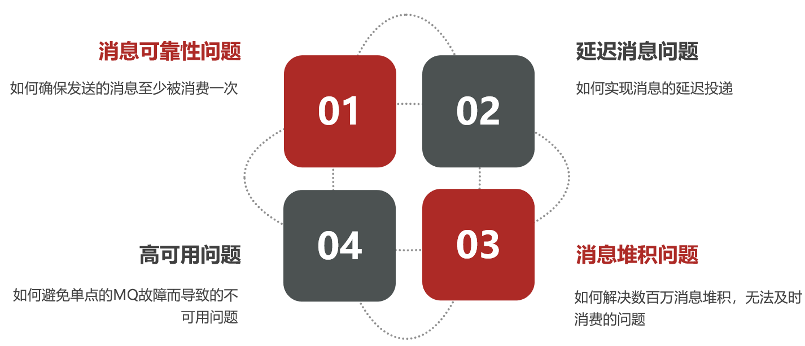
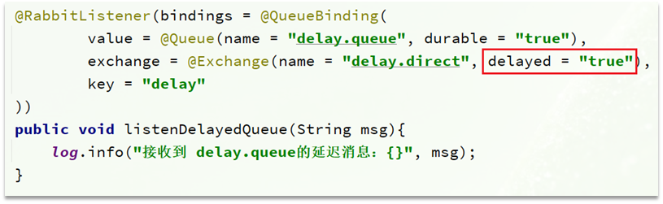

服务异步通信-高级篇
消息队列在使用过程中，面临着很多实际问题需要思考：

1.消息可靠性
消息从发送，到消费者接收，会经理多个过程：

其中的每一步都可能导致消息丢失，常见的丢失原因包括：
发送时丢失：
- 生产者发送的消息未送达exchange
- 消息到达exchange后未到达queue
MQ宕机，queue将消息丢失
consumer接收到消息后未消费就宕机
针对这些问题，RabbitMQ分别给出了解决方案：
- 生产者确认机制
- mq持久化
- 消费者确认机制
- 失败重试机制
下面我们就通过案例来演示每一个步骤。
首先，导入课前资料提供的demo工程：

项目结构如下：

1.1.生产者消息确认
RabbitMQ提供了publisher confirm机制来避免消息发送到MQ过程中丢失。这种机制必须给每个消息指定一个唯一ID。消息发送到MQ以后，会返回一个结果给发送者，表示消息是否处理成功。
返回结果有两种方式：
publisher-confirm，发送者确认
- 消息成功投递到交换机，返回ack
- 消息未投递到交换机，返回nack
publisher-return，发送者回执
- 消息投递到交换机了，但是没有路由到队列。返回ACK，及路由失败原因。

注意：

1.1.1.修改配置
首先，修改publisher服务中的application.yml文件，添加下面的内容：
1spring2 rabbitmq3 publisher-confirm-typecorrelated4 publisher-returnstrue5 template6 mandatorytrue7 说明：
publish-confirm-type：开启publisher-confirm，这里支持两种类型：simple：同步等待confirm结果，直到超时correlated：异步回调，定义ConfirmCallback，MQ返回结果时会回调这个ConfirmCallback
publish-returns：开启publish-return功能，同样是基于callback机制，不过是定义ReturnCallbacktemplate.mandatory：定义消息路由失败时的策略。true，则调用ReturnCallback；false：则直接丢弃消息
1.1.2.定义Return回调
每个RabbitTemplate只能配置一个ReturnCallback，因此需要在项目加载时配置：
修改publisher服务，添加一个：
x1package cn.itcast.mq.config;2
3import lombok.extern.slf4j.Slf4j;4import org.springframework.amqp.rabbit.core.RabbitTemplate;5import org.springframework.beans.BeansException;6import org.springframework.context.ApplicationContext;7import org.springframework.context.ApplicationContextAware;8import org.springframework.context.annotation.Configuration;9
10public class CommonConfig implements ApplicationContextAware {13 14 public void setApplicationContext(ApplicationContext applicationContext) throws BeansException {15 // 获取RabbitTemplate16 RabbitTemplate rabbitTemplate = applicationContext.getBean(RabbitTemplate.class);17 // 设置ReturnCallback18 rabbitTemplate.setReturnCallback((message, replyCode, replyText, exchange, routingKey) -> {19 // 投递失败，记录日志20 log.info("消息发送失败，应答码{}，原因{}，交换机{}，路由键{},消息{}",21 replyCode, replyText, exchange, routingKey, message.toString());22 // 如果有业务需要，可以重发消息23 });24 }25}
1.1.3.定义ConfirmCallback
ConfirmCallback可以在发送消息时指定，因为每个业务处理confirm成功或失败的逻辑不一定相同。
在publisher服务的cn.itcast.mq.spring.SpringAmqpTest类中，定义一个单元测试方法：
xxxxxxxxxx241public void testSendMessage2SimpleQueue() throws InterruptedException {2 // 1.消息体3 String message = "hello, spring amqp!";4 // 2.全局唯一的消息ID，需要封装到CorrelationData中5 CorrelationData correlationData = new CorrelationData(UUID.randomUUID().toString());6 // 3.添加callback7 correlationData.getFuture().addCallback(8 result -> {9 if(result.isAck()){10 // 3.1.ack，消息成功11 log.debug("消息发送成功, ID:{}", correlationData.getId());12 }else{13 // 3.2.nack，消息失败14 log.error("消息发送失败, ID:{}, 原因{}",correlationData.getId(), result.getReason());15 }16 },17 ex -> log.error("消息发送异常, ID:{}, 原因{}",correlationData.getId(),ex.getMessage())18 );19 // 4.发送消息20 rabbitTemplate.convertAndSend("task.direct", "task", message, correlationData);21
22 // 休眠一会儿，等待ack回执23 Thread.sleep(2000);24}
1.2.消息持久化
生产者确认可以确保消息投递到RabbitMQ的队列中，但是消息发送到RabbitMQ以后，如果突然宕机，也可能导致消息丢失。
要想确保消息在RabbitMQ中安全保存，必须开启消息持久化机制。
- 交换机持久化
- 队列持久化
- 消息持久化
1.2.1.交换机持久化
RabbitMQ中交换机默认是非持久化的，mq重启后就丢失。
SpringAMQP中可以通过代码指定交换机持久化：
xxxxxxxxxx51public DirectExchange simpleExchange(){3 // 三个参数：交换机名称、是否持久化、当没有queue与其绑定时是否自动删除4 return new DirectExchange("simple.direct", true, false);5}事实上，默认情况下，由SpringAMQP声明的交换机都是持久化的。
可以在RabbitMQ控制台看到持久化的交换机都会带上D的标示：

1.2.2.队列持久化
RabbitMQ中队列默认是非持久化的，mq重启后就丢失。
SpringAMQP中可以通过代码指定交换机持久化：
xxxxxxxxxx51public Queue simpleQueue(){3 // 使用QueueBuilder构建队列，durable就是持久化的4 return QueueBuilder.durable("simple.queue").build();5}事实上，默认情况下，由SpringAMQP声明的队列都是持久化的。
可以在RabbitMQ控制台看到持久化的队列都会带上D的标示：

1.2.3.消息持久化
利用SpringAMQP发送消息时，可以设置消息的属性（MessageProperties），指定delivery-mode：
- 1：非持久化
- 2：持久化
用java代码指定：

默认情况下，SpringAMQP发出的任何消息都是持久化的，不用特意指定。
1.3.消费者消息确认
RabbitMQ是阅后即焚机制，RabbitMQ确认消息被消费者消费后会立刻删除。
而RabbitMQ是通过消费者回执来确认消费者是否成功处理消息的：消费者获取消息后，应该向RabbitMQ发送ACK回执，表明自己已经处理消息。
设想这样的场景：
- 1）RabbitMQ投递消息给消费者
- 2）消费者获取消息后，返回ACK给RabbitMQ
- 3）RabbitMQ删除消息
- 4）消费者宕机，消息尚未处理
这样，消息就丢失了。因此消费者返回ACK的时机非常重要。
而SpringAMQP则允许配置三种确认模式：
•manual：手动ack，需要在业务代码结束后，调用api发送ack。
•auto：自动ack，由spring监测listener代码是否出现异常，没有异常则返回ack；抛出异常则返回nack
•none：关闭ack，MQ假定消费者获取消息后会成功处理，因此消息投递后立即被删除
由此可知：
- none模式下，消息投递是不可靠的，可能丢失
- auto模式类似事务机制，出现异常时返回nack，消息回滚到mq；没有异常，返回ack
- manual：自己根据业务情况，判断什么时候该ack
一般，我们都是使用默认的auto即可。
1.3.1.演示none模式
修改consumer服务的application.yml文件，添加下面内容：
xxxxxxxxxx51spring2 rabbitmq3 listener4 simple5 acknowledge-modenone # 关闭ack修改consumer服务的SpringRabbitListener类中的方法，模拟一个消息处理异常：
xxxxxxxxxx71(queues = "simple.queue")2public void listenSimpleQueue(String msg) {3 log.info("消费者接收到simple.queue的消息：【{}】", msg);4 // 模拟异常5 System.out.println(1 / 0);6 log.debug("消息处理完成！");7}测试可以发现，当消息处理抛异常时，消息依然被RabbitMQ删除了。
1.3.2.演示auto模式
再次把确认机制修改为auto:
xxxxxxxxxx51spring2 rabbitmq3 listener4 simple5 acknowledge-modeauto # 关闭ack在异常位置打断点，再次发送消息，程序卡在断点时，可以发现此时消息状态为unack（未确定状态）：

抛出异常后，因为Spring会自动返回nack，所以消息恢复至Ready状态，并且没有被RabbitMQ删除：

1.4.消费失败重试机制
当消费者出现异常后，消息会不断requeue（重入队）到队列，再重新发送给消费者，然后再次异常，再次requeue，无限循环，导致mq的消息处理飙升，带来不必要的压力：

怎么办呢？
1.4.1.本地重试
我们可以利用Spring的retry机制，在消费者出现异常时利用本地重试，而不是无限制的requeue到mq队列。
修改consumer服务的application.yml文件，添加内容：
xxxxxxxxxx101spring2 rabbitmq3 listener4 simple5 retry6 enabledtrue # 开启消费者失败重试7 initial-interval1000 # 初识的失败等待时长为1秒8 multiplier1 # 失败的等待时长倍数，下次等待时长 = multiplier * last-interval9 max-attempts3 # 最大重试次数10 statelesstrue # true无状态；false有状态。如果业务中包含事务，这里改为false
重启consumer服务，重复之前的测试。可以发现：
- 在重试3次后，SpringAMQP会抛出异常AmqpRejectAndDontRequeueException，说明本地重试触发了
- 查看RabbitMQ控制台，发现消息被删除了，说明最后SpringAMQP返回的是ack，mq删除消息了
结论：
- 开启本地重试时，消息处理过程中抛出异常，不会requeue到队列，而是在消费者本地重试
- 重试达到最大次数后，Spring会返回ack，消息会被丢弃
1.4.2.失败策略
在之前的测试中，达到最大重试次数后，消息会被丢弃，这是由Spring内部机制决定的。
在开启重试模式后，重试次数耗尽，如果消息依然失败，则需要有MessageRecovery接口来处理，它包含三种不同的实现：
- RejectAndDontRequeueRecoverer：重试耗尽后，直接reject，丢弃消息。默认就是这种方式
- ImmediateRequeueMessageRecoverer：重试耗尽后，返回nack，消息重新入队
- RepublishMessageRecoverer：重试耗尽后，将失败消息投递到指定的交换机
比较优雅的一种处理方案是RepublishMessageRecoverer，失败后将消息投递到一个指定的，专门存放异常消息的队列，后续由人工集中处理。
1）在consumer服务中定义处理失败消息的交换机和队列
xxxxxxxxxx121public DirectExchange errorMessageExchange(){3 return new DirectExchange("error.direct");4}5public Queue errorQueue(){7 return new Queue("error.queue", true);8}9public Binding errorBinding(Queue errorQueue, DirectExchange errorMessageExchange){11 return BindingBuilder.bind(errorQueue).to(errorMessageExchange).with("error");12}
2）定义一个RepublishMessageRecoverer，关联队列和交换机
xxxxxxxxxx41public MessageRecoverer republishMessageRecoverer(RabbitTemplate rabbitTemplate){3 return new RepublishMessageRecoverer(rabbitTemplate, "error.direct", "error");4}
完整代码：
xxxxxxxxxx311package cn.itcast.mq.config;2
3import org.springframework.amqp.core.Binding;4import org.springframework.amqp.core.BindingBuilder;5import org.springframework.amqp.core.DirectExchange;6import org.springframework.amqp.core.Queue;7import org.springframework.amqp.rabbit.core.RabbitTemplate;8import org.springframework.amqp.rabbit.retry.MessageRecoverer;9import org.springframework.amqp.rabbit.retry.RepublishMessageRecoverer;10import org.springframework.context.annotation.Bean;11
12public class ErrorMessageConfig {14 15 public DirectExchange errorMessageExchange(){16 return new DirectExchange("error.direct");17 }18 19 public Queue errorQueue(){20 return new Queue("error.queue", true);21 }22 23 public Binding errorBinding(Queue errorQueue, DirectExchange errorMessageExchange){24 return BindingBuilder.bind(errorQueue).to(errorMessageExchange).with("error");25 }26
27 28 public MessageRecoverer republishMessageRecoverer(RabbitTemplate rabbitTemplate){29 return new RepublishMessageRecoverer(rabbitTemplate, "error.direct", "error");30 }31}
1.5.总结
如何确保RabbitMQ消息的可靠性？
- 开启生产者确认机制，确保生产者的消息能到达队列
- 开启持久化功能，确保消息未消费前在队列中不会丢失
- 开启消费者确认机制为auto，由spring确认消息处理成功后完成ack
- 开启消费者失败重试机制，并设置MessageRecoverer，多次重试失败后将消息投递到异常交换机，交由人工处理
2.死信交换机
2.1.初识死信交换机
2.1.1.什么是死信交换机
什么是死信？
当一个队列中的消息满足下列情况之一时，可以成为死信（dead letter）：
- 消费者使用basic.reject或 basic.nack声明消费失败，并且消息的requeue参数设置为false
- 消息是一个过期消息，超时无人消费
- 要投递的队列消息满了，无法投递
如果这个包含死信的队列配置了dead-letter-exchange属性，指定了一个交换机，那么队列中的死信就会投递到这个交换机中，而这个交换机称为死信交换机（Dead Letter Exchange，检查DLX）。
如图，一个消息被消费者拒绝了，变成了死信：

因为simple.queue绑定了死信交换机 dl.direct，因此死信会投递给这个交换机：

如果这个死信交换机也绑定了一个队列，则消息最终会进入这个存放死信的队列：

另外，队列将死信投递给死信交换机时，必须知道两个信息：
- 死信交换机名称
- 死信交换机与死信队列绑定的RoutingKey
这样才能确保投递的消息能到达死信交换机，并且正确的路由到死信队列。

2.1.2.利用死信交换机接收死信（拓展）
在失败重试策略中，默认的RejectAndDontRequeueRecoverer会在本地重试次数耗尽后，发送reject给RabbitMQ，消息变成死信，被丢弃。
我们可以给simple.queue添加一个死信交换机，给死信交换机绑定一个队列。这样消息变成死信后也不会丢弃，而是最终投递到死信交换机，路由到与死信交换机绑定的队列。
我们在consumer服务中，定义一组死信交换机、死信队列：
xxxxxxxxxx221// 声明普通的 simple.queue队列，并且为其指定死信交换机：dl.direct2public Queue simpleQueue2(){4 return QueueBuilder.durable("simple.queue") // 指定队列名称，并持久化5 .deadLetterExchange("dl.direct") // 指定死信交换机6 .build();7}8// 声明死信交换机 dl.direct9public DirectExchange dlExchange(){11 return new DirectExchange("dl.direct", true, false);12}13// 声明存储死信的队列 dl.queue14public Queue dlQueue(){16 return new Queue("dl.queue", true);17}18// 将死信队列 与 死信交换机绑定19public Binding dlBinding(){21 return BindingBuilder.bind(dlQueue()).to(dlExchange()).with("simple");22}
2.1.3.总结
什么样的消息会成为死信？
- 消息被消费者reject或者返回nack
- 消息超时未消费
- 队列满了
死信交换机的使用场景是什么？
- 如果队列绑定了死信交换机，死信会投递到死信交换机；
- 可以利用死信交换机收集所有消费者处理失败的消息（死信），交由人工处理，进一步提高消息队列的可靠性。
2.2.TTL
一个队列中的消息如果超时未消费，则会变为死信，超时分为两种情况：
- 消息所在的队列设置了超时时间
- 消息本身设置了超时时间

2.2.1.接收超时死信的死信交换机
在consumer服务的SpringRabbitListener中，定义一个新的消费者，并且声明 死信交换机、死信队列：
xxxxxxxxxx81(bindings = (2 value = (name = "dl.ttl.queue", durable = "true"),3 exchange = (name = "dl.ttl.direct"),4 key = "ttl"5))6public void listenDlQueue(String msg){7 log.info("接收到 dl.ttl.queue的延迟消息：{}", msg);8}
2.2.2.声明一个队列，并且指定TTL
要给队列设置超时时间，需要在声明队列时配置x-message-ttl属性：
xxxxxxxxxx71public Queue ttlQueue(){3 return QueueBuilder.durable("ttl.queue") // 指定队列名称，并持久化4 .ttl(10000) // 设置队列的超时时间，10秒5 .deadLetterExchange("dl.ttl.direct") // 指定死信交换机6 .build();7}注意，这个队列设定了死信交换机为dl.ttl.direct
声明交换机，将ttl与交换机绑定：
xxxxxxxxxx81public DirectExchange ttlExchange(){3 return new DirectExchange("ttl.direct");4}5public Binding ttlBinding(){7 return BindingBuilder.bind(ttlQueue()).to(ttlExchange()).with("ttl");8}
发送消息，但是不要指定TTL：
xxxxxxxxxx111public void testTTLQueue() {3 // 创建消息4 String message = "hello, ttl queue";5 // 消息ID，需要封装到CorrelationData中6 CorrelationData correlationData = new CorrelationData(UUID.randomUUID().toString());7 // 发送消息8 rabbitTemplate.convertAndSend("ttl.direct", "ttl", message, correlationData);9 // 记录日志10 log.debug("发送消息成功");11}发送消息的日志：

查看下接收消息的日志：

因为队列的TTL值是10000ms，也就是10秒。可以看到消息发送与接收之间的时差刚好是10秒。
2.2.3.发送消息时，设定TTL
在发送消息时，也可以指定TTL：
xxxxxxxxxx131public void testTTLMsg() {3 // 创建消息4 Message message = MessageBuilder5 .withBody("hello, ttl message".getBytes(StandardCharsets.UTF_8))6 .setExpiration("5000")7 .build();8 // 消息ID，需要封装到CorrelationData中9 CorrelationData correlationData = new CorrelationData(UUID.randomUUID().toString());10 // 发送消息11 rabbitTemplate.convertAndSend("ttl.direct", "ttl", message, correlationData);12 log.debug("发送消息成功");13}
查看发送消息日志：

接收消息日志：

这次，发送与接收的延迟只有5秒。说明当队列、消息都设置了TTL时，任意一个到期就会成为死信。
2.2.4.总结
消息超时的两种方式是？
- 给队列设置ttl属性，进入队列后超过ttl时间的消息变为死信
- 给消息设置ttl属性，队列接收到消息超过ttl时间后变为死信
如何实现发送一个消息20秒后消费者才收到消息？
- 给消息的目标队列指定死信交换机
- 将消费者监听的队列绑定到死信交换机
- 发送消息时给消息设置超时时间为20秒
2.3.延迟队列
利用TTL结合死信交换机，我们实现了消息发出后，消费者延迟收到消息的效果。这种消息模式就称为延迟队列（Delay Queue）模式。
延迟队列的使用场景包括：
- 延迟发送短信
- 用户下单，如果用户在15 分钟内未支付，则自动取消
- 预约工作会议，20分钟后自动通知所有参会人员
因为延迟队列的需求非常多，所以RabbitMQ的官方也推出了一个插件，原生支持延迟队列效果。
这个插件就是DelayExchange插件。参考RabbitMQ的插件列表页面：https://www.rabbitmq.com/community-plugins.html

使用方式可以参考官网地址：https://blog.rabbitmq.com/posts/2015/04/scheduling-messages-with-rabbitmq
2.3.1.安装DelayExchange插件
参考课前资料：

2.3.2.DelayExchange原理
DelayExchange需要将一个交换机声明为delayed类型。当我们发送消息到delayExchange时，流程如下：
- 接收消息
- 判断消息是否具备x-delay属性
- 如果有x-delay属性，说明是延迟消息，持久化到硬盘，读取x-delay值，作为延迟时间
- 返回routing not found结果给消息发送者
- x-delay时间到期后，重新投递消息到指定队列
2.3.3.使用DelayExchange
插件的使用也非常简单：声明一个交换机，交换机的类型可以是任意类型，只需要设定delayed属性为true即可，然后声明队列与其绑定即可。
1）声明DelayExchange交换机
基于注解方式（推荐）：

也可以基于@Bean的方式：

2）发送消息
发送消息时，一定要携带x-delay属性，指定延迟的时间：

2.3.4.总结
延迟队列插件的使用步骤包括哪些？
•声明一个交换机，添加delayed属性为true
•发送消息时，添加x-delay头，值为超时时间
3.惰性队列
3.1.消息堆积问题
当生产者发送消息的速度超过了消费者处理消息的速度，就会导致队列中的消息堆积，直到队列存储消息达到上限。之后发送的消息就会成为死信，可能会被丢弃，这就是消息堆积问题。

解决消息堆积有两种思路：
- 增加更多消费者，提高消费速度。也就是我们之前说的work queue模式
- 扩大队列容积，提高堆积上限
要提升队列容积，把消息保存在内存中显然是不行的。
3.2.惰性队列
从RabbitMQ的3.6.0版本开始，就增加了Lazy Queues的概念，也就是惰性队列。惰性队列的特征如下：
- 接收到消息后直接存入磁盘而非内存
- 消费者要消费消息时才会从磁盘中读取并加载到内存
- 支持数百万条的消息存储
3.2.1.基于命令行设置lazy-queue
而要设置一个队列为惰性队列，只需要在声明队列时，指定x-queue-mode属性为lazy即可。可以通过命令行将一个运行中的队列修改为惰性队列：
xxxxxxxxxx11rabbitmqctl set_policy Lazy "^lazy-queue$" '{"queue-mode":"lazy"}' --apply-to queues 命令解读：
rabbitmqctl：RabbitMQ的命令行工具set_policy：添加一个策略Lazy：策略名称，可以自定义"^lazy-queue$"：用正则表达式匹配队列的名字'{"queue-mode":"lazy"}'：设置队列模式为lazy模式--apply-to queues：策略的作用对象，是所有的队列
3.2.2.基于@Bean声明lazy-queue

3.2.3.基于@RabbitListener声明LazyQueue

3.3.总结
消息堆积问题的解决方案？
- 队列上绑定多个消费者，提高消费速度
- 使用惰性队列，可以再mq中保存更多消息
惰性队列的优点有哪些？
- 基于磁盘存储，消息上限高
- 没有间歇性的page-out，性能比较稳定
惰性队列的缺点有哪些？
- 基于磁盘存储，消息时效性会降低
- 性能受限于磁盘的IO
4.MQ集群
4.1.集群分类
RabbitMQ的是基于Erlang语言编写，而Erlang又是一个面向并发的语言，天然支持集群模式。RabbitMQ的集群有两种模式：
•普通集群：是一种分布式集群，将队列分散到集群的各个节点，从而提高整个集群的并发能力。
•镜像集群：是一种主从集群，普通集群的基础上，添加了主从备份功能，提高集群的数据可用性。
镜像集群虽然支持主从，但主从同步并不是强一致的，某些情况下可能有数据丢失的风险。因此在RabbitMQ的3.8版本以后，推出了新的功能：仲裁队列来代替镜像集群，底层采用Raft协议确保主从的数据一致性。
4.2.普通集群
4.2.1.集群结构和特征
普通集群，或者叫标准集群（classic cluster），具备下列特征：
- 会在集群的各个节点间共享部分数据，包括：交换机、队列元信息。不包含队列中的消息。
- 当访问集群某节点时，如果队列不在该节点，会从数据所在节点传递到当前节点并返回
- 队列所在节点宕机，队列中的消息就会丢失
结构如图：

4.2.2.部署
参考课前资料：《RabbitMQ部署指南.md》
4.3.镜像集群
4.3.1.集群结构和特征
镜像集群：本质是主从模式，具备下面的特征：
- 交换机、队列、队列中的消息会在各个mq的镜像节点之间同步备份。
- 创建队列的节点被称为该队列的主节点，备份到的其它节点叫做该队列的镜像节点。
- 一个队列的主节点可能是另一个队列的镜像节点
- 所有操作都是主节点完成，然后同步给镜像节点
- 主宕机后，镜像节点会替代成新的主
结构如图：

4.3.2.部署
参考课前资料：《RabbitMQ部署指南.md》
4.4.仲裁队列
4.4.1.集群特征
仲裁队列：仲裁队列是3.8版本以后才有的新功能，用来替代镜像队列，具备下列特征：
- 与镜像队列一样，都是主从模式，支持主从数据同步
- 使用非常简单，没有复杂的配置
- 主从同步基于Raft协议，强一致
4.4.2.部署
参考课前资料：《RabbitMQ部署指南.md》
4.4.3.Java代码创建仲裁队列
xxxxxxxxxx71public Queue quorumQueue() {3 return QueueBuilder4 .durable("quorum.queue") // 持久化5 .quorum() // 仲裁队列6 .build();7}
4.4.4.SpringAMQP连接MQ集群
注意，这里用address来代替host、port方式
xxxxxxxxxx61spring:2 rabbitmq:3 addresses: 192.168.150.105:8071, 192.168.150.105:8072, 192.168.150.105:80734 username: itcast5 password: 1233216 virtual-host: /